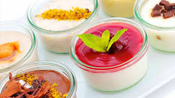
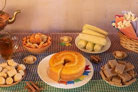
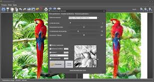
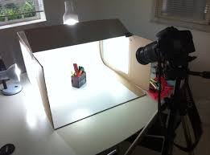

Aventuras em trilhas de montanhas imponentes, com destaque para
paisagens incríveis e...
Por nossa equipe. Urbanismo
Vida na Cidade
As grandes cidades oferecem uma mistura de cultura, trabalho,
lazer e diversidade, com um ritmo dinâmico e...
Por nossa equipe. Praias
Descubra as Costas
Viagens ao longo das costas mais deslumbrantes do mundo,
explorando praias, falésias e...
Por nossa equipe. Aventuras no Deserto
Explorando as Dunas do Saara
Desafios emocionantes no Deserto do Saara, com atividades como
passeios de camelo, acampamentos sob...
Por nossa equipe. Trilhas Secretas
Descobrindo Caminhos Ocultos na América do Sul
Trilhas desconhecidas na América do Sul, como a Trilha do Pico do
Baepi, oferecendo vistas panorâmicas e...
Por nossa equipe. Viagem no Tempo
Visitando Cidades Históricas da Europa
Riqueza histórica e cultural em cidades europeias, como Cusco, com
suas...
Por nossa equipe. Paraísos Tropicais
As Ilhas Mais Belas do Pacífico
Ilhas paradisíacas no Pacífico Sul, com paisagens de tirar o
fôlego e experiências exclusivas para...
Por nossa equipe. Viagens de Inverno
Destinos Encantadores para Curtir a Neve
Destinos de inverno, como as montanhas Apalaches, para quem ama
atividades na...
Por nossa equipe. Cidades Fantásticas
Explorando Capitais pelo Mundo
Capitais vibrantes ao redor do mundo, com culturas distintas e
atrações que...
Por nossa equipe. Retiros de Relaxamento
Descubra Lugares Perfeitos para Descansar
Destinos tranquilos para relaxamento, como Ilhabela, com suas
praias serenas e...
Por nossa equipe. Inteligência Artificial
Impactos e Aplicações no Dia a Dia
Máquinas que imitam a inteligência humana, sendo usadas em áreas
como saúde, transporte e...
Por nossa equipe. Top Gadgets do Ano
Dispositivos Que Você Precisa Conhecer
Dispositivos eletrônicos inovadores e populares, como smartphones,
smartwatches, fones de...
Por nossa equipe. Segurança Digital
Como Proteger Seus Dados na Internet
Proteção contra ataques digitais, com foco em privacidade,
criptografia e prevenção de...
Por nossa equipe. A Revolução dos Smartphones
Tendências para o Futuro
Novas tecnologias que transformam indústrias, como inteligência
artificial e...
Por nossa equipe. O Crescimento do 5G
Benefícios e Como Ele Está Mudando Tudo
A quinta geração de redes móveis, proporcionando maior velocidade
e menor latência, impactando a comunicação e a...
Por nossa equipe. Tecnologia Verde
Como a Inovação Ajuda o Meio Ambiente
Inovações tecnológicas voltadas para a sustentabilidade e proteção
ambiental, como energias renováveis, eficiência energética e...
Por nossa equipe. Realidade Virtual e Aumentada
Aplicações Além dos Jogos
Tecnologias que imergem o usuário em ambientes virtuais ou
adicionam camadas de...
Por nossa equipe. Tecnologia
Trabalho Remoto e Ferramentas Tecnológicas Essenciais
Aplicativos e plataformas que facilitam a produtividade e
organização, como software de comunicação, gerenciamento de...
Por nossa equipe. Criptomoedas e Blockchain
Uma Introdução para Iniciantes
Moedas digitais descentralizadas que utilizam criptografia para
segurança. Exemplos populares incluem Bitcoin, Ethereum e outras
altcoins. São usadas como meio...
Por nossa equipe. A Internet das Coisas (IoT)
A Casa Conectada e o Futuro
Conexão de dispositivos do cotidiano à internet, permitindo
automação e...
Por nossa equipe. Receitas
Receitas Fáceis para o Dia a Dia
Pratos simples e rápidos para quem tem pouco tempo, mas quer...
Por nossa equipe. Cozinha Internacional
Sabores do Mundo em Sua Casa
Pratos típicos de diferentes partes do mundo, como sushi, paella,
e...

Por nossa equipe. Doces Irresistíveis
Sobremesas para Impressionar
Delícias para a sobremesa, de bolos a doces rápidos, que...
Por nossa equipe. Dicas
Dicas para Iniciantes na Cozinha
Comece com receitas simples e sobremesas fáceis, invista em
utensílios básicos, pratique o uso de temperos e condimentos,
aprenda a controlar o tempo de cozimento e...
Por nossa equipe. Comida Saudável
Refeições Saborosas e Nutritivas
Opções saudáveis e equilibradas para quem busca manter uma dieta
nutritiva e...
Por nossa equipe. Receitas de Família
O Sabor da Tradição
Resgate os sabores tradicionais da sua casa com receitas passadas
de geração em geração, que trazem conforto e memória afetiva.
Prepare pratos simples e...
Por nossa equipe. Receitas Veganas
Explorando a Gastronomia Vegana e Vegetariana
Receitas sem ingredientes de origem animal, focadas em plantas
e...
Por nossa equipe. Harmonização de Vinhos e Pratos
Como Acertar na Escolha
Aprenda a combinar vinhos com diferentes tipos de pratos para
realçar os sabores de cada um. Descubra as melhores opções para...

Por nossa equipe. Culinária de Festas
Pratos para Celebrar
Comidas perfeitas para servir em eventos, como canapés, finger
foods e...
Por nossa equipe. Truques de Chef
Técnicas Profissionais para Sua Cozinha
Explore métodos usados por chefs renomados para aprimorar sua
habilidade culinária. Aprenda a...
Por nossa equipe. Introdução à Fotografia
Dicas para Iniciantes
Aprenda as bases, como exposição, composição, e a...
Por nossa equipe. Fotografia
Como Fotografar Paisagens de Tirar o Fôlego
Como capturar a beleza natural, utilizando a luz do dia e a...
Por nossa equipe. Fotografia com Smartphone
Como Capturar Imagens Profissionais
Domine conceitos como exposição, composição e iluminação para...

Por nossa equipe. Técnicas de Edição
Transforme Suas Fotos com Software
Aperfeiçoe suas fotos com ajustes de cor, contraste e nitidez,
usando...
Por nossa equipe. Retratos Perfeitos
Segredos para Fotografar Pessoas
Dicas para capturar a essência de uma pessoa com foco na...
Por nossa equipe. Fotografia de Viagem
Capturando Momentos Únicos em Lugares Distantes
Dicas sobre como capturar o espírito dos lugares visitados, com
foco em...
Por nossa equipe. Fotografia Noturna
Explorando a Fotografia Noturna
Técnicas para tirar fotos à noite, lidando com a falta de luz e...
Por nossa equipe. Princípios
Os Princípios da Composição Fotográfica
Aprenda a organizar elementos na cena para criar imagens
equilibradas e...

Por nossa equipe. Fotografia de Produtos
Como Montar um Miniestúdio em Casa
Técnicas para fotografar produtos de forma clara e atraente
para...
Por nossa equipe. História da Fotografia
Das Primeiras Câmeras aos Smartphones
Explore a evolução da fotografia, desde os equipamentos analógicos
até...